December 2016 — Cluj-Napoca, Romania
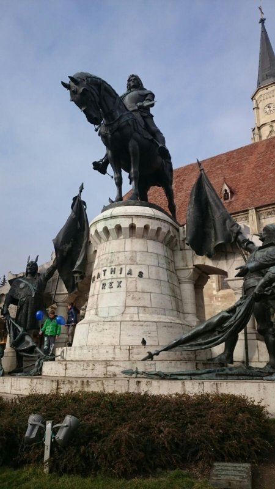The idea
for a Europe-wide meeting was born on Discord in August 2016. From then on everything went so fast... some votings on Facebook, some discussions on Discord, signup on Typeform, one or two or maybe five shared documents, a coordination mail here and there, relaxed talks with several hostels and restaurants, the whole thing basically organized itself.
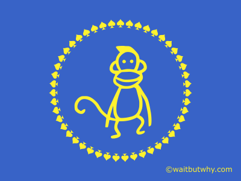And BOOM! There we were.
Out of all the available cities...
we picked Cluj because it is interesting and it is cheap but mainly because Cristina successfully convinced the rest of us. It turned out to be a perfect choice, probably as any other. We occupied a complete hostel.
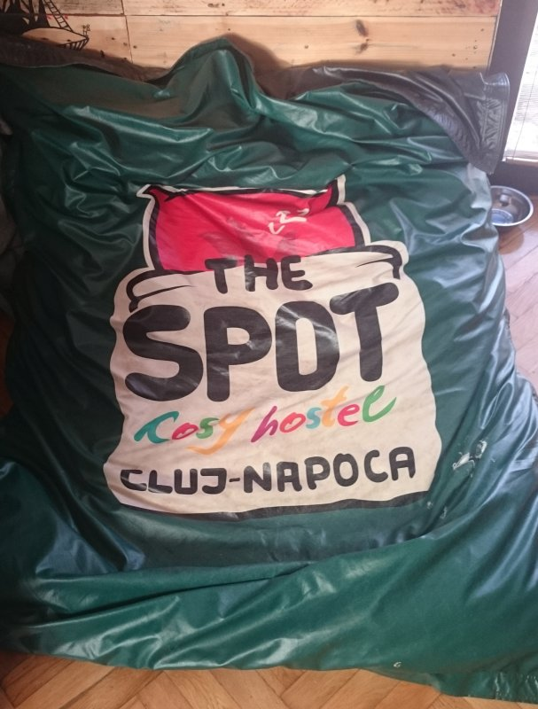The hostel dudes were so chill, kind and uncomplicated, it was almost suspicious. And no, we were not paid to write this here, it is our innermost urge to give something back after we’ve been hosteled so comfortably. They even had pink toilet paper! What more could one desire!?
The awkward getting to know phase
was embraced by playing a get to know game that was carefully and thoughtfully prepared in order to make all those weird introvert nerds that WaitButWhy fans probably are feel comfortable. Except that was not what happened. People introduced themselves on their own, whole group discussions were happening, nearly instant connection, no awkward silence, it almost felt like we were all decent sociable people! It was amazing!
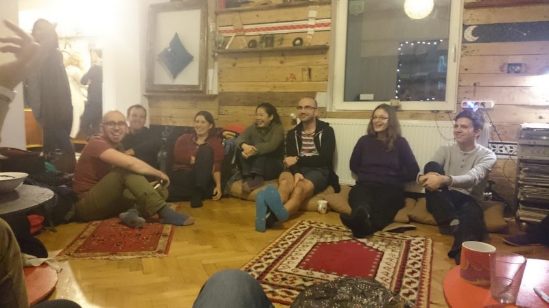(It’s not about the picture quality ok? Shut up!)
Friday evening
we went to Euphoria Biergarten because we were afraid that the social room in the hostel isn’t big enough for all of us. It would have been. But we stuck to the plan anyway since we didn’t want to confuse the Germans and the Swiss people in our group.
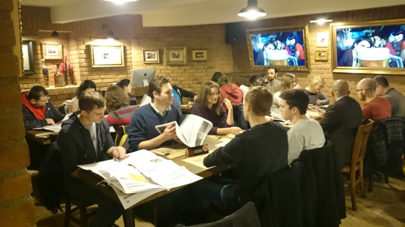What is there to say... Nice food, nice atmosphere, nice conversations, nice spontaneous birthday for Krystian. We concluded the evening in the hostel with more nice discussions and more nice atmosphere.
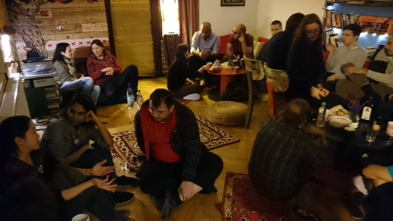At the end of the day, the orga crew was ambivalently satisfied and disappointed because everything went so well so far and there was not really anything to take care of.
Until...
Saturday Morning
, where the plan was to leave the hostel at 9 because it’s gonna be a busy day. And many of us managed.
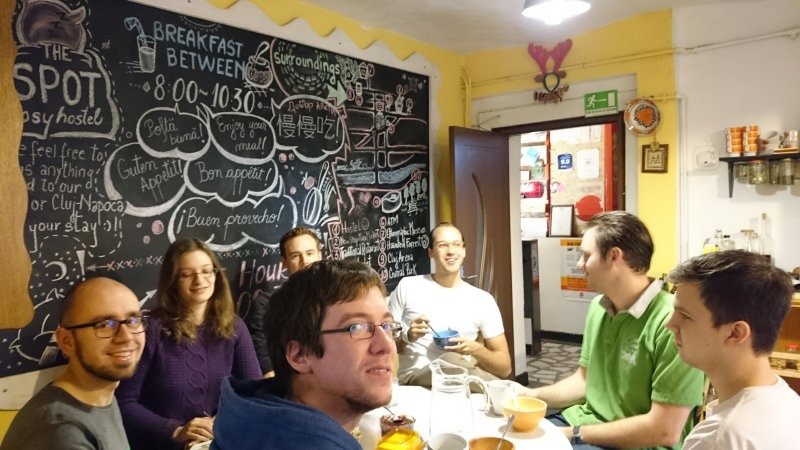Even Danish.
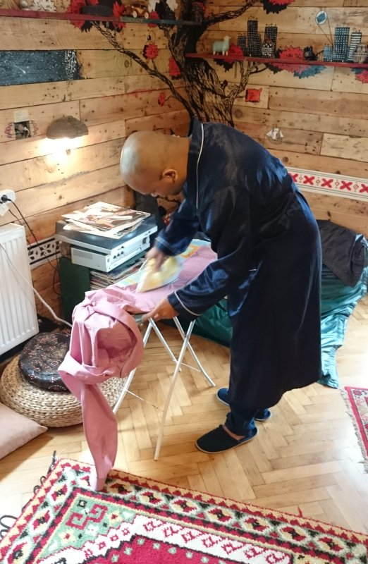However, turns out that some people are just not designed to get up in the morning. Another discovery was that social loafing seems to play a role in collectively being on time also. Anyway, a subgroup of us headed out to
The Peasant Museum
.
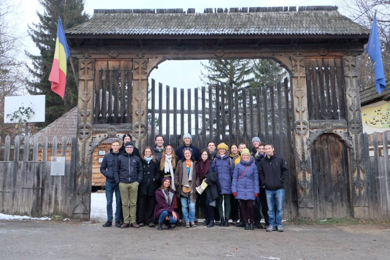Ancient buildings from ancient times were displayed here, showing how ancient people lived. Everything was water-powered and we were wondering how people survived there, considering that none of the houses had a chimney. We even saw a new ancient building under construction.
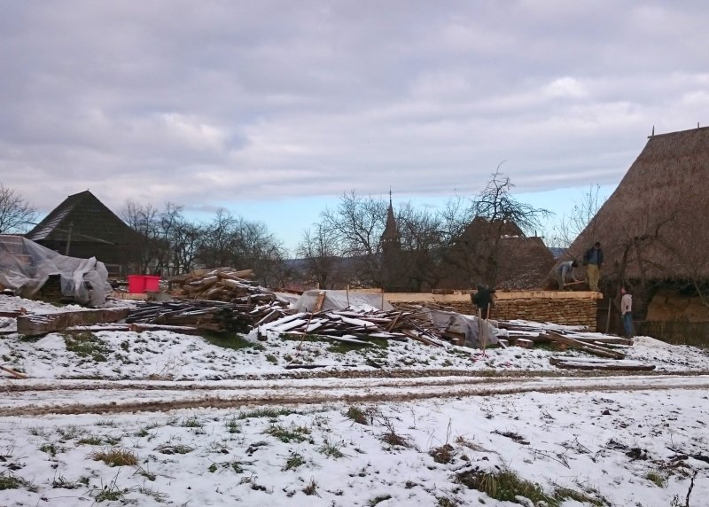We also saw this creepy church, suspiciously looking at us over its shoulder in a creepy way. It was obviously hiding something.
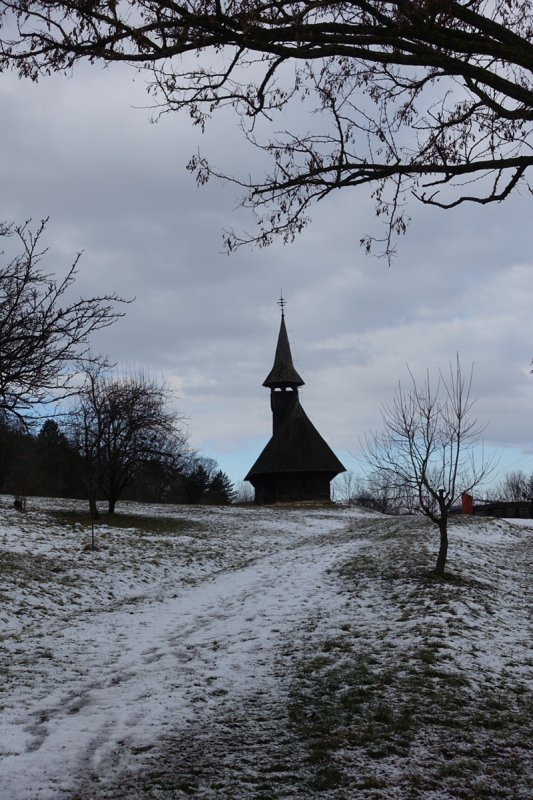On our everlasting quest to explore the crap out of charted and touristically accessible areas, our next mission took us to
The Botanical Garden
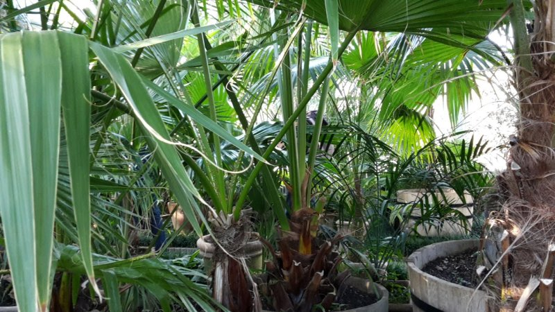, where one can find untouched nature, penned up in artificial greenhouses. Still great though, don’t get this wrong. But of course, as always, the more important thing was the casual chit chat about existential topics, big pictures and crucial questions for society. There was also a tower with a nice view on Cluj that one can imagine behind the trees.
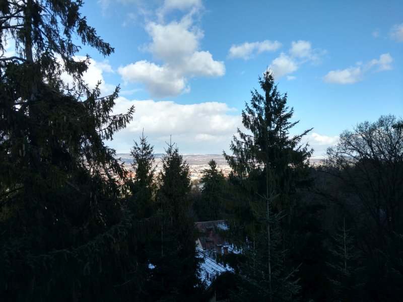Lunch
was had at Café Bulgakov. All good. Hipster yet chill atmo.
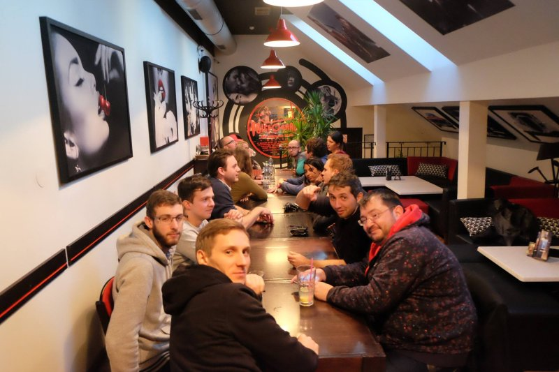All fed up, we took out to our next adventure! What is a city visit without a
Tour-Guide-guided city tour
? Still a cool city visit probably, but anyway, we had nothing to lose.
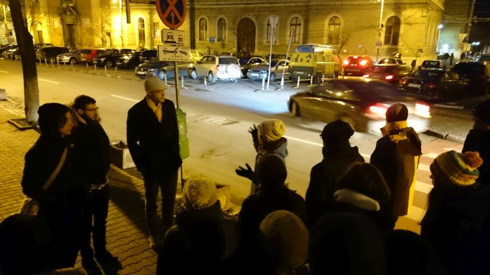And it turned out quite piquantly since there seem to be some controversial view points on Cluj’s history and our locals were not afraid to argue and fact check, made possible by modern mobile technology. Hard times for tour guides.
Then this picture was made. It does not really contribute to the plot now but it is just too nice to be excluded here.
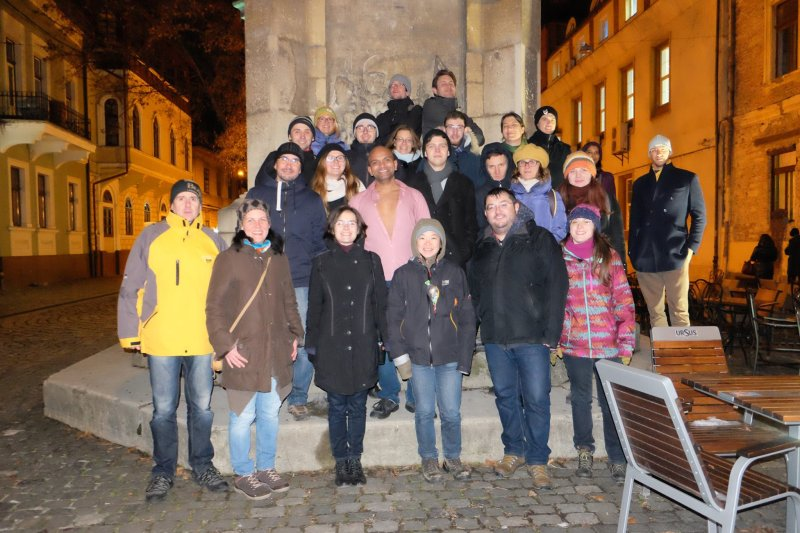After the city tour and so to say for the first time during the weekend, everyone was free to do
Whatever
they want. A bold move, organization-wise, but we felt courageous and risked it. Some of us went to the
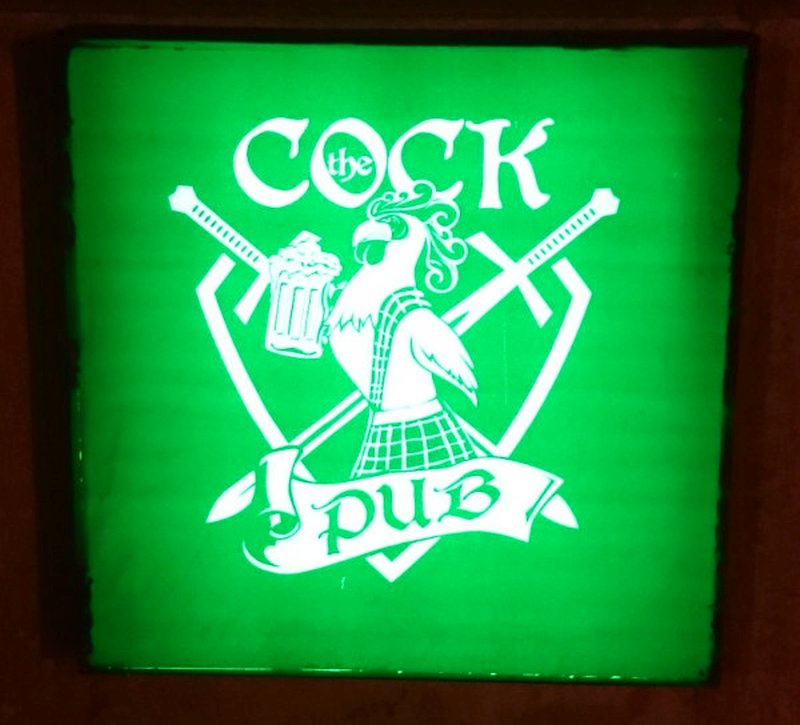(This pub is probably famous for this pun being so ridiculously unhilarious.) And some went to the Christmas market which was so shockingly beautiful that no one took a picture of it.
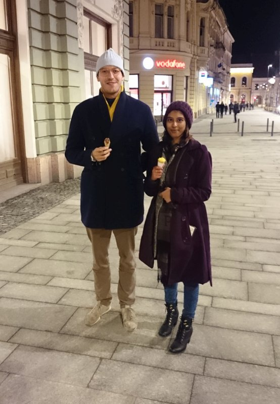Leo and Adyasha (left to right (who knows these days)), our Swiss people from Germany and India, used the opportunity to get some fucking ice cream because it wasn’t fucking freezing cold enough as it is.
Saturday’s dinner
was dined at Fabrica de Bere Ursus which was just special.
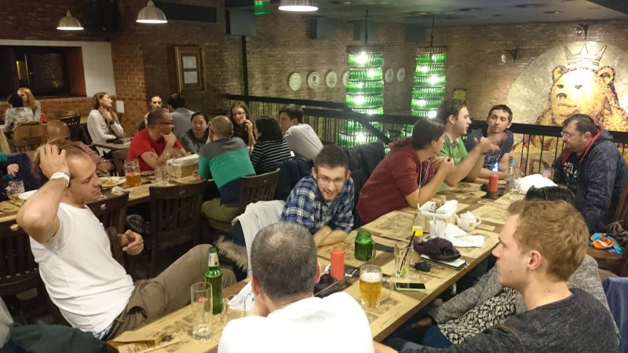Here we let the evening coast. The orga team sat together, concluded that this whole thing went ridiculously well so far and we started spit balling about plans for the next time.
Sunday morning
The plan for Sunday was to visit a famous salt mine. We booked a bus to pick us up at the hostel at 10. Please take a moment to wrap your head around the fact that we booked a bus like this was some actual serious event, planned by adult people who know what they are doing. I mean, are you kidding me? I mean, right?
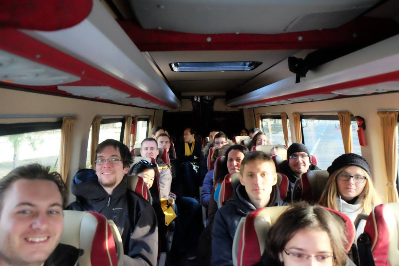Anyway, considering that we had a deadline and with the group drag of the last morning still in mind, we decided to kindly support people in their ascending procedure.
Kudos to Sibby for her mad guitar skillz! And we actually made it! Everyone was ready at 10! Even the Romanians!
Salina Turda
is a salt mine located in the Durgău-Valea Sărată area of Turda, the second largest city in Cluj County, Romania. Since its opening to tourists in 1992, Salina Turda has been visited by about 2 million Romanian and foreign tourists. But enough Wikipedia blah, we just went there because the pics on the internet look kinda SciFi and we found it funny that there is "turd" in the name. And we were not disappointed. Just look at the entrance!
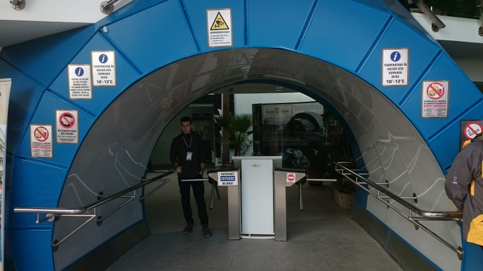The next part was a space tunnely descend into the deep abyss of healthy air...
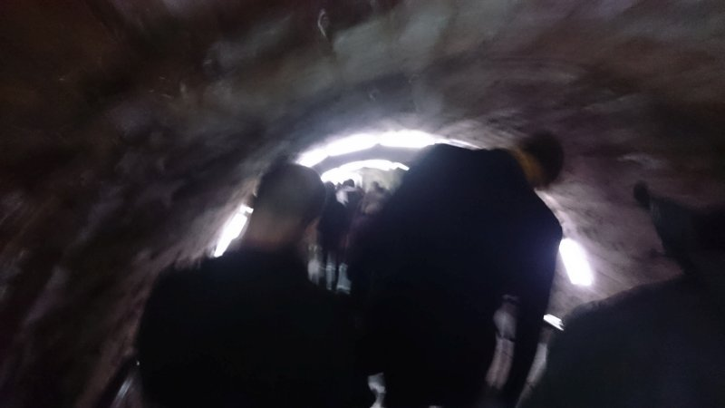... which looked like this:
Hands down, rowing in an underground salt mine? How much more could life possibly have to offer?
(Obligatory group picture with our awesome guide (by the way we had a guide #soofficial):
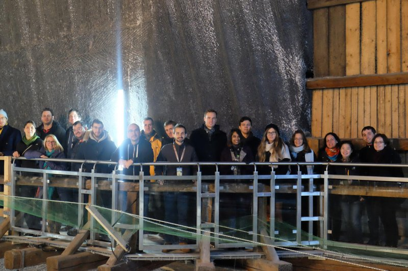)
Well, no one went lost (or at least no one was reported lost) and we all gathered outside the mine. The horrible yet unavoidable smell of a heart-braking
Good Bye
was in the air. We all gathered in front of the mine for some final pathetic words and a big group hug.
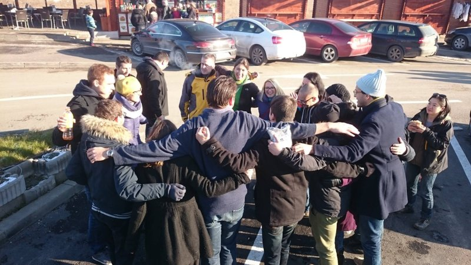The End.
Except that some of us still stayed in Cluj for more eating and discussing and friendshipping because of flight schedules. But that’s probably not worth mentioning. However, in order to make the whole thing look more fancy, let’s take a look at the
Represented Nations
that were gathering here in love and peace and harmony and many racist jokes:
France, Germany, Great Britain (yes, we can still be friends), India, Indonesia, Iran, Malaysia, Morocco, Netherlands, Pakistan, Poland, Romania, Switzerland (thanks to Rachel for providing three items here)
Hmm, 13 is actually not that earth-shattering. It felt much more though.
Let’s take a look at the
Feedback:
I first want to congratulate you, all the organizers of this WBH meeting for a job well done. Also, thank you for all your time, wasted neurons and effort you put in to this.
We had fun. More than I imagined. I met very interesting people. Also some very brilliant people, the kind of people you will read about in 10-15 years. We exchanged ideas and concepts. We talked rationally about all kinds of things and I believe we all improved ourselves in the process. I have made new friends.
I enjoyed the time in Cluj, and I will miss you guys. See you next year.
Andu
Warm gratitude to our esteemed Management, I wish ye the longest life (temperature may vary) and the most fulfilling Nutrition.
Alex
Some lines? Well, I enjoyed those 3 days more than I expected. This does not happen very often.
Being surrounded by nice people, all smarter than me, was a great experience. It’s not inconceivable that all of them were also younger. And most of them taller. YES, GERMANS AND DUTCH, I’M LOOKING AT YOU!
Congrats and thanks for organizing this, you did really well from my POV.
The hostel was quite nice and the hostel guys were great.
I tried for a while to find some complaints but couldn’t find any (I even enjoyed you singing).
...wait, could have used better weather and more daylight, but I am willing to be persuaded it wasn’t your fault.
Thanks again and hopefully we’ll meet again next year.
Radu
an incredible thing and probably the greatest achievements of humanity.
Elon Musk
All the others agreed in silence.
Yeah well alright, some cherry-picking was done here and Musk’s statement may have actually been about sending people to the moon. In a true WBW spirit, let’s have a look at the other side of the spectrum also:
What I think could be improved:
Some planned time for discussions. I had one-to-one conversations with almost all of the participants but it was kind of hard to do that :P. I liked the first day round table discussions.
Andu
Room for improvement:
- some planned time to do stuff by yourself or in small groups, not the whole group, maybe different options or just let people come up with own ideas. (I really liked the spontaneous stroll around Cluj and the Christmas market with only a few people Saturday night.)
- some planned time for whole-group discussions. Yes, probably not everybody will speak up, but I think that round we had the first evening was interesting in its own way.
- I was a bit miffed at the delay in departure Saturday morning. Probably my pedantic German side breaking its way here. But I thought for a while, great, people, why did I get up so early, I could have slept another hour... dunno really how to avoid that. Maybe a matter of compromise between kicking people out of bed if you want to leave at a certain time (yeah, we’ll practise a repertoire of wake-up-songs), announce it differently, or just me relaxing about my Germanness.
Sibby
So there you have it.
Conclusion and Outlook
It was awesome and it was just the beginning.
Big Thank You! to everyone who came! We couldn’t have organized it without you! Well, technically we could have but it wouldn’t have been the same.
Also, a massive wordsarenotenoughish Thanks to Tim Urban and his team, the people behind WaitButWhy, for connecting this special type of diverse yet like-minded crowd. We hope you guys can make it to the upcoming meeting[s]!
Final Remarks
If you go to Cluj, check out Kürtőskalács, it’s delicious!